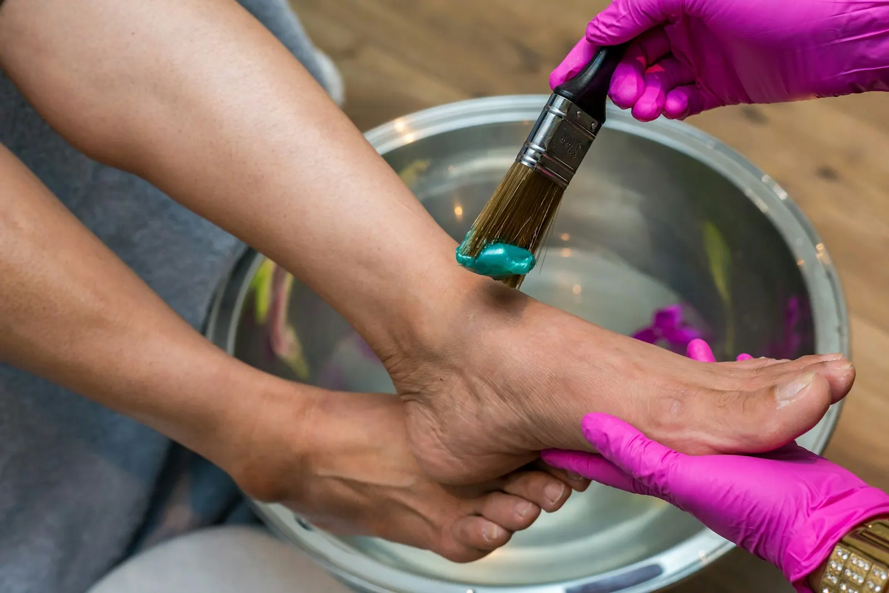
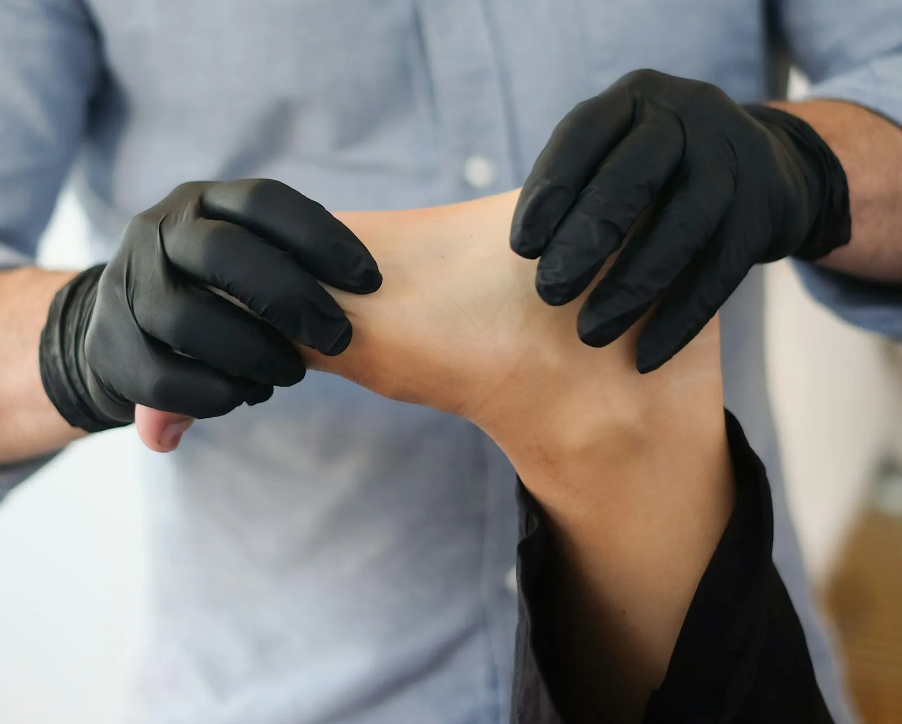
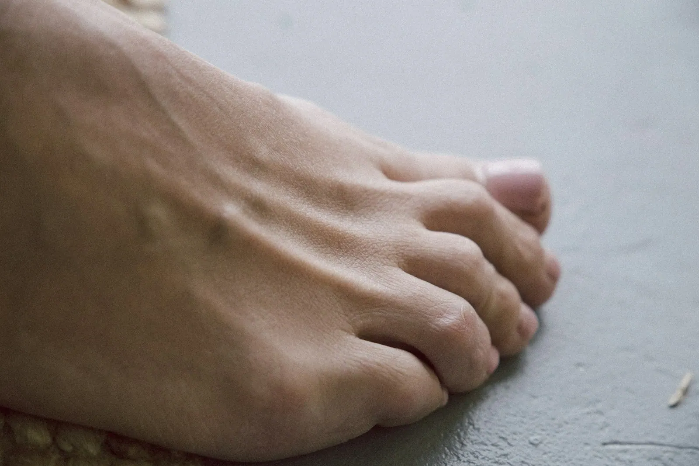
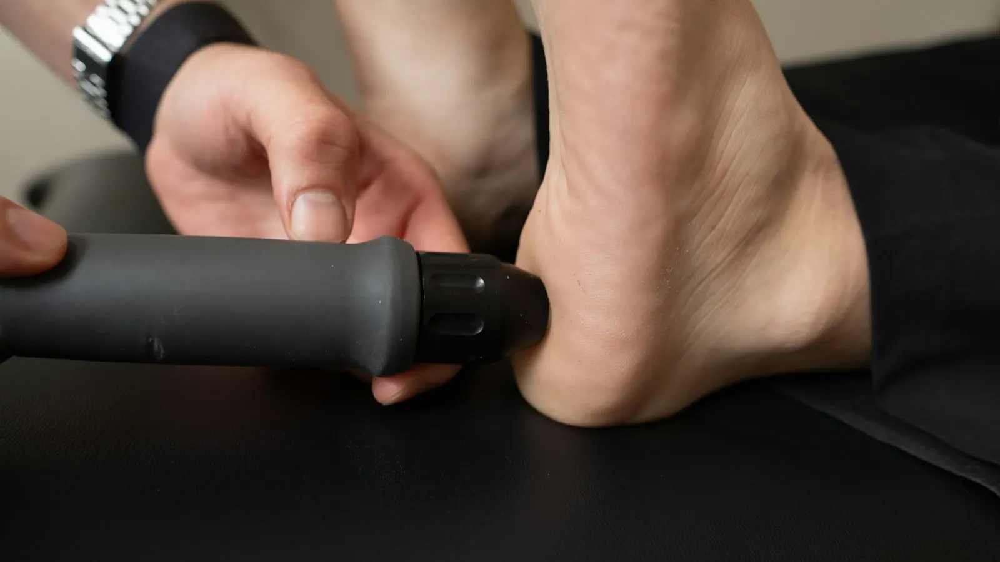
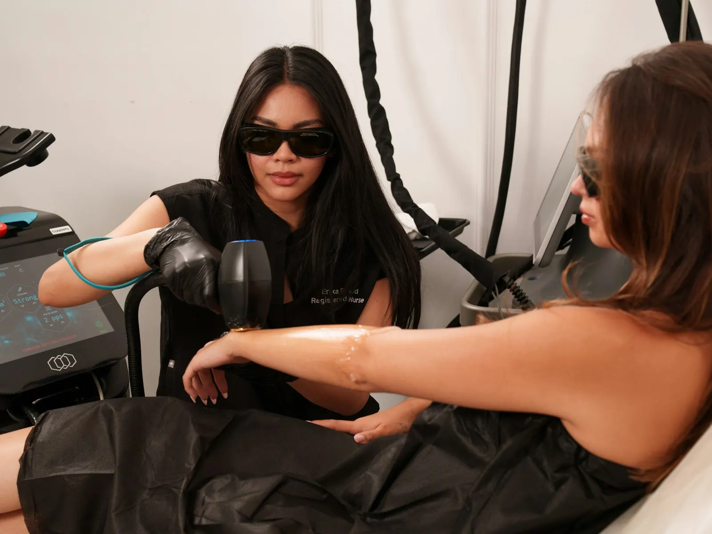
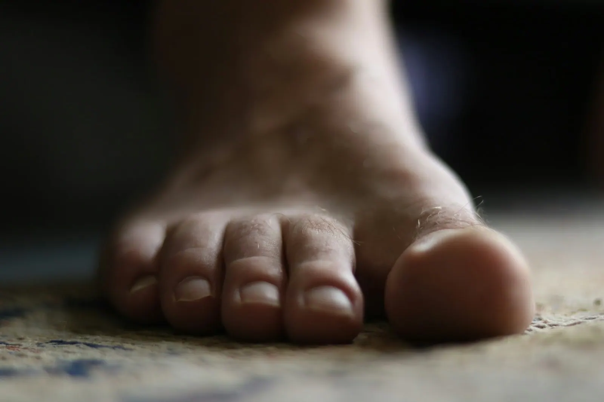
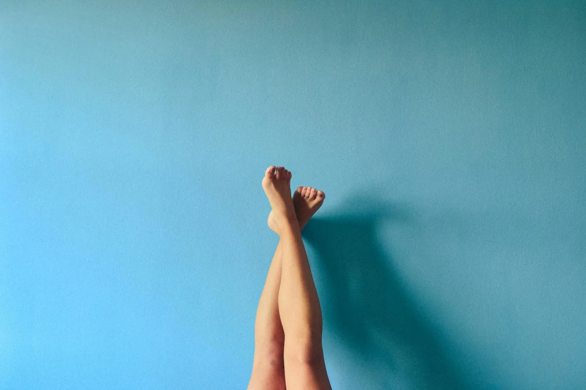

Medische pedicure
Nagels knippen en bijwerken, eelt verwijderen en een goede blik op je voeten. Wie hier komt, loopt nadien weer op wolkjes.
Een ingegroeide nagel, een pijnlijk drukpunt of voeten die extra zorg vragen door diabetes. Bij pedi+Birgit in Kerkhoven word je rustig geholpen, krijg je alles uitgelegd en ga je naar huis met voeten die weer licht aanvoelen.
5,0★★★★★24 reviews op Google
Sanne Kees, op Google
Voor dringende zorg houdt Birgit tijd vrij die je niet online ziet. Kies wat bij jou past, dan weet je meteen wat je best doet.
Bij een ontstoken teennagel wacht je beter niet. Bel naar 0472 71 83 76, dan zoeken we samen het eerste vrije moment.
Telefonisch bereikbaar van maandag tot vrijdag, van 9 tot 17 uur. Op woensdag niet.
Van een grondige pedicure tot de dingen waar je liever niet te lang mee rondloopt. Gewoon, met de tijd die ervoor nodig is.

Nagels knippen en bijwerken, eelt verwijderen en een goede blik op je voeten. Wie hier komt, loopt nadien weer op wolkjes.

Pijn aan de zijkant van je teen? Vaak lost een nagelbeugel het op, zodat de nagel weer mooi uitgroeit.

Likdoorns en drukplekken worden voorzichtig weggenomen. Je voelt het verschil bij de eerste stap.
Bij diabetes vraagt een voet extra aandacht. Kleine wondjes of drukplekken worden tijdig opgemerkt.

Oksels, benen of bovenlip. Na een paar behandelingen sta je zelf te kijken hoeveel haartjes al weg zijn.
Verzorgde voeten en een zachte huid. Even tijd voor jezelf, in een propere en rustige praktijk.
Een ingegroeide nagel kan je dagen doen strompelen. Met een nagelbeugel wordt de nagel zacht en geleidelijk opgetild, zodat hij niet meer in de huid drukt. Vaak voel je meteen minder pijn.


Minder scheren, minder harsen. Na elke behandeling groeit er minder terug. Klanten die voor hun oksels, benen en bovenlip komen, staan er zelf van te kijken hoe snel dat gaat.
Birgit is een krak in haar vak. Ze neemt de nodige tijd en legt alles goed uit. Ze stelt je op je gemak en ze werkt heel proper.
Sanne Keesop GoogleSuper goed geholpen bij mijn ingegroeide nagel. De nagelbeugel zit perfect en ik had meteen minder pijn.
Delfien Vierstraeteop GoogleMisschien saai maar blijft beste pedicure die ik ooit kreeg.
Marleenvia de boekingsagendaBirgit is een topper in haar vak. Ze doet dit met volle overtuiging en legt alles haarfijn uit.
Birgit Koxop GoogleDe praktijk ligt aan de Kerkhovensesteenweg 467 in Lommel.
Bel tijdens deze uren, of stuur een berichtje.
| Maandag | 9.00 tot 17.00 |
| Dinsdag | 9.00 tot 17.00 |
| Woensdag | Niet telefonisch |
| Donderdag | 9.00 tot 17.00 |
| Vrijdag | 9.00 tot 17.00 |
Al klant? Dan kan je ook online een moment kiezen in de boekingsagenda.
Je bericht opent in WhatsApp. Birgit belt of schrijft je terug.
Online boeken is voorbehouden aan bestaande klanten. Kom je voor het eerst, bel dan even of stuur een berichtje. Dan plannen we samen je eerste afspraak.
Bel meteen. Voor dringende zorg is er tijd vrij die niet in de online agenda staat.
Nee, je kan ook zonder komen. Heb je er wel een van je huisarts, neem ze dan mee en laat het weten als je belt.
Kijk elke dag even naar je voeten en laat ze geregeld verzorgen. Heb je een wonde die niet heelt, verwittig dan ook je huisarts.
Op woensdag is de praktijk telefonisch niet bereikbaar. Stuur gerust een berichtje, je krijgt nadien antwoord.
DIEen woordje uitleg van Stijn
Ik maakte deze demo voor jullie om te tonen wat er kan. Na een kort gesprek maak ik er iets veel persoonlijkers van, helemaal naar jullie wens.
Vrijblijvend. Ik kom langs of we bellen.
Op maat, op jullie eigen domein.
Geen voorschot. Jullie betalen pas als alles klaar is.
Hosting, domeinnaam en kleine wijzigingen, zoals nieuwe openingsuren.
Omdat een voorbeeld meer zegt dan een mail. Zo zien jullie meteen wat er kan, en het kost jullie niets.
Nee. Het gesprek is vrijblijvend. Vinden jullie het niks, dan is het daarmee gedaan.
Na ons gesprek staat jullie site binnen 10 tot 14 dagen online.
Zeker. Jullie domeinnaam kan gewoon blijven, de nieuwe site komt in de plaats van de oude.
Nee, dat doe ik op basis van ons gesprek. Eigen foto's zijn mooi meegenomen, maar niet nodig om te starten.